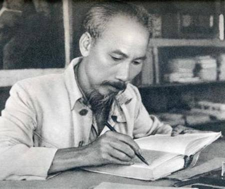

Ngày 23/8/1945, Hồ Chủ Tịch về đến thôn Gạ (Phú Thượng, Hà Nội), nghỉ ở đây một ngày. Hôm sau Người được trung ương và Thành uỷ bố trí đến ở tại gác hai số nhà 48 Hàng Ngang (nhà của ông Trịnh Văn Bô, một thương gia yêu nước, cơ sở tin cậy của Cách mạng). Về đến Hà Nội, Bác gầy và yếu (sau trận ốm và phải đi xa), nhưng những người xung quanh vẫn thấy đôi mắt của Người luôn sáng rực.
Bà Trịnh Văn Bô, nữ chủ nhân của ngôi nhà 48 Hàng Ngang lịch sử, kể: “Bác từ chiến khu về chỉ có một đôi dép cao su nhãn hiệu con hổ trắng, chiếc quần soóc nâu, chiếc áo sơ mi ngắn tay, một chiếc can và chiếc mũ phớt bạc màu.
Bà Bô bồi hồi nhớ lại: “Lúc bấy giờ trong tủ nhà chúng tôi có rất nhiều vải (bà Bô là nhà buôn vải), tôi lấy ra mấy súc ka-ki để may cho anh em. Trong tủ có vài chục bộ quần áo khá sang trọng may sẵn mà ông Bô chưa dùng nên tôi lấy ra cho các anh mặc tạm trước. Ông Phạm Văn Đồng, rồi ông Võ Nguyên Giáp,… ai mặc vừa bộ nào thì dùng bộ nấy. Nhưng tầm người như Bác Hồ không bộ nào hợp cả”.
Lúc đó, ông Vũ Đình Huỳnh chợt nhớ tới một bức ảnh của Xtalin nên ướm thử với Bác may theo kiểu áo đó, cũng không có cà vạt mà oai vệ. Bác mỉm cười nói: “Nhưng mình có phải là Xtalin đâu”. Bác luôn học hỏi tinh hoa nhưng không chấp nhận bắt chước khuôn mẫu sẵn.
Cuối cùng ông Vũ Đình Huỳnh mời ông Phú Thịnh, chủ hiệu may có tiếng ở phố Hàng Quạt tới và trình bày: “Tôi có người nhà là cụ lý ở quê ra thăm thủ đô, tôi muốn cắt vài bộ đồ cho cụ, nhờ anh cắt may kiểu áo bốn túi, mặc kín cổ khi có việc quan trọng, lúc thường nhật thì mở khuya áo thoải mái, đi giày đi dép đều hợp với cụ lý nhà tôi”.
Hôm sau, lựa lúc Bác tập thể dục, tắm sáng xong, ông Vũ Đình Huỳnh đem bộ quần áo mới vào. Bác ướm thử, ngắm kỹ cổ áo và mỉm cười: “Được, thế này là hợp với mình”. Ông Vũ Đình Huỳnh lúc đó đã rất vui và thầm mỉm cười nghĩ, chỉ trong vài ngày nữa, ông Phú Thịnh sẽ vô cùng sung sướng và ngạc nhiên vinh dự khi “cụ lý” mà mình may quần áo cho lại chính là Chủ tịch Hồ Chí Minh, Người đọc Tuyên ngôn độc lập tại Vườn hoa Ba Đình để khai sinh ra một quốc gia mới - Nước Việt Nam Dân chủ Cộng hoà.
Sưu tầm